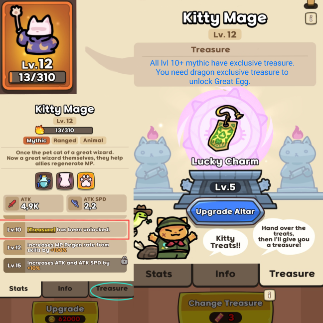

How to Upgrade Treasures
To find the treasues, you will need to get a mythic to level 10 or higher. After that, you can navigate to the location in this photo to start finding and upgrading your treasures:
Credit to Yosh and Jubilent for gathering data about the treasure system, who gathered the information and posted it all on the discord before I was able to add it here.